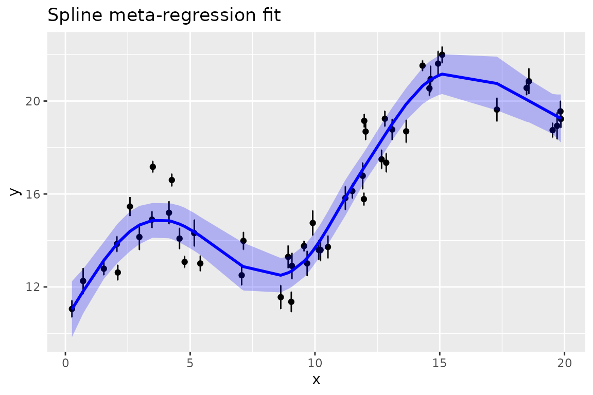

splinemixmeta
splinemixmeta.RmdIntroduction
Package splinemixmeta provides some basic capabilities
in non-parametric meta-regression. If one has responses y,
each with a standard error, from previous analyses, and wants to regress
those against study-level explanatory variables x without
assuming linearity, splinemixmeta allows an arbitrary
smooth relationship to be estimated as a smoothing spline. It is also
possible to include other explanatory variables (assumed to have a
linear relationship to y) and random effects groupings.
Such an approach may be referred to as “non-parametric meta-analysis”,
“spline meta-regression”, “meta-splines”, or other similar terminology
mash-ups.
splinemixmeta works by bringing together features of
mgcv for building spline components and
mixmeta for estimating general mixed-effects meta-analysis
models. Specifically, the splines of mgcv can be used as
random effects components, with the penalty matrix providing a
correlation structure for spline coefficients, the unknown smoothness
parameter replaced by an unknown variance parameter, and any unpenalized
directions in the spline parameter space (e.g. spline parameters
representing a linear relationship) moved into fixed effects. The
resulting pieces are then set up as needed for a call to
mixmeta::mixmeta for estimating the model. Variance
parameters are always estimated by REML (restricted maximum
likelihood).
There are some important limits on what will work. At the moment,
only spline choices for which covariance matrices can be diagonalized
are supported. One can have multiple such components. In practice, the
only bivariate spline (i.e. not simply addition of two univariate
splines) that could potentially work is bs = 'tp', although
currently there is an issue translating the pieces from
mgcv to splinemixmeta for that case. It is
possible that bs = 'mrf' also works, but it has not been
tested. See help(splinemixmeta) for more about what is
supported.
The estimation machinery is not particularly efficient and so may be notably slow for large models.
Example
Here we give a simulated example. Say we have n=50
values, with 5 values from each of 10 groups, with a sinusoidal
relationship between y and x to provide a
simple nonlinear example. The groups will be treated as random effects,
as will the spline.
Data simulation
set.seed(1)
n <- 50
num_groups <- 10
group <- rep(1:num_groups, each = 5) |> factor()
group_effects <- rnorm(length(group), 0, 0.3)
x <- runif(n, 0, 20)
coef_x <- 0.6
se <- runif(n, 0.1, 0.3)
fx <- 1.5 * sin(2 * pi * x / 12)
y <- 10 + coef_x * x + fx +
group_effects[group] +
fx + rnorm(n, 0, 1) + rnorm(n, 0, se)
data <- data.frame(y, x, se, group)
plot(y ~ x, data = data, col = group, pch = 19, main = "Simulated data (color = group)")
This data simulation has the following pieces:
- We have 10 groups of 5 data points each. Since the
xvalues are drawn independently, the groups are randomly associated withxvalues. -
xis uniformly distributed from 0 to 20. - Fixed effects for
yinclude an intercept and linear term. - Random effects for
yinclude the group effects. - The sinusoidal term for
ywill be estimated as a spline, treated as a random effect. - Residuals are normally distributed with
sd = 1. - Measurement errors (i.e. estimation error from the previous studies
from which
ywere obtained) are normally distributed with standard deviations that are the standard errors (se) from the previous studies. These are simulated as uniformly distributed between 0.1 and 0.3 to show heterogeneity in the precision of previous studies, which be due for example to different sample sizes.
Estimation of a spline meta-regression model
The spline meta-regression model can be estimated like this:
library(splinemixmeta)
# smm <- splinemixmeta( mgcv::s(x), y ~ x, se = se, manual_fixed = TRUE, data = data, random = ~ 1 | group)
smm <- splinemixmeta( mgcv::s(x, bs = "cr"), y ~ x, se = se, manual_fixed = TRUE, data = data, random = ~ 1 | group)The object smm will have class “splinemixmeta” and
“mixmeta”. First we can look at a summary of the model:
summary(smm)
#> Call: mixmeta::mixmeta(formula = y ~ x, S = (se)^2, data = data, random = list(
#> ~basisFxns_A - 1 | all, ~1 | group, ~1 | ID), bscov = c("id",
#> "unstr", "unstr"))
#>
#> Univariate extended random-effects meta-regression
#> Dimension: 1
#> Estimation method: REML
#>
#> Fixed-effects coefficients
#> Estimate Std. Error z Pr(>|z|) 95%ci.lb 95%ci.ub
#> (Intercept) 11.6246 0.3215 36.1600 0.0000 10.9945 12.2547 ***
#> x 0.4509 0.0265 17.0192 0.0000 0.3990 0.5028 ***
#> ---
#> Signif. codes: 0 '***' 0.001 '**' 0.01 '*' 0.05 '.' 0.1 ' ' 1
#>
#> Random-effects (co)variance components
#> Formula: ~basisFxns_A - 1 | all
#> Structure: Multiple of identity
#> Std. Dev Corr
#> basisFxns_A1 0.4490 basisFxns_A1 basisFxns_A2 basisFxns_A3 basisFxns_A4
#> basisFxns_A2 0.4490 0
#> basisFxns_A3 0.4490 0 0
#> basisFxns_A4 0.4490 0 0 0
#> basisFxns_A5 0.4490 0 0 0 0
#> basisFxns_A6 0.4490 0 0 0 0
#> basisFxns_A7 0.4490 0 0 0 0
#> basisFxns_A8 0.4490 0 0 0 0
#>
#> basisFxns_A1 basisFxns_A5 basisFxns_A6 basisFxns_A7
#> basisFxns_A2
#> basisFxns_A3
#> basisFxns_A4
#> basisFxns_A5
#> basisFxns_A6 0
#> basisFxns_A7 0 0
#> basisFxns_A8 0 0 0
#>
#> Formula: ~1 | group
#> Structure: General positive-definite
#> Std. Dev
#> 0.4097
#>
#> Formula: ~1 | ID
#> Structure: General positive-definite
#> Std. Dev
#> 0.8835
#>
#> Univariate Cochran Q-test for residual heterogeneity:
#> Q = 6358.8466 (df = 48), p-value = 0.0000
#> I-square statistic = 99.2%
#>
#> 50 units, 1 outcome, 50 observations, 2 fixed and 3 random-effects parameters
#> logLik AIC BIC
#> -76.3152 162.6304 171.9864The spline terms are labeled as basisFxns_A. Further
splines would be basixFxns_B, etc.
Two factors have been introduced. One is called all,
which has a single level for every row of the data, which facilitates
use of mixmeta::mixmeta. The other is called
ID, which has a unique value for each row. In
meta-regression, it can be tempting to think that the standard errors
associated with y values serve as residual variation, but
that is not typically the case. If each y came from a large
sample size in the previous studies, the standard errors would be small,
but we would still expect study-level variation around any regression
line because the world is noisy. That study-level variation,
i.e. residual variation, is set up as a random effect with one level for
each y.
By using y ~ x, we included a linear term for
x directly (manually), and thus we needed to set
manual_fixed = TRUE. Otherwise splinemixmeta
would have extracted a linear term from the spline setup and included it
in the model, and we don’t want it duplicated. In the
summary output, we see the full covariance matrix from the
spline random effect, which is the vector spline coefficients. This is
shown as the standard deviation for each component (all the same) and
their correlations (all 0), reflecting a covariance matrix that is a
constant times an identity matrix.
Finally we see the estimated standard deviation between groups and
the estimated residual standard deviation, shows as the
~1 | ID term.
(If the default names all or ID are already
used in the data set, splinemixmeta will choose different
names.)
Predictions
Predictions can be obtained at multiple levels of the random effects.
The predict function for splinemixmeta objects
simplifies this by allowing the simple choices of including any spline
terms (default TRUE), other random effects (default
FALSE but possibly of interest) and residuals (default
FALSE and typically not of interest). Predictions will come
with columns for standard errors and variances (simply the squared
standard errors). The machinery for predictions is modified from
mixmeta::blup(), where “blup” means “best linear unbiased
predictor”, a standard term in linear mixed effects modeling. Hence the
column of predictions returned by predict is labeled
“blup”. The blups come from the conditional distribution of
random effects, given the data and estimated variance parameters.
Following mixmeta::blup, predictions can be of type
“outcome”, in which case variance from fixed effects terms is included
in the prediction variance (and standard errors), or “residual”, in
which case only variance from random effects is included. The default is
“outcome”. See help(predict.splinemixmeta) for details. Any
further fine-grained control (such as including one spline but not
another), can be done by calling splinemixmeta::blup()
directly.
Here are two versions of predictions:
pred_spline_only <- predict(smm, include_smooths = TRUE, include_REs = FALSE, include_residuals = FALSE, type = "outcome")
pred_spline_and_groups <- predict(smm, include_smooths = TRUE, include_REs = TRUE, include_residuals = FALSE, type = "outcome")
message("Need to fix case with level=0")
#> Need to fix case with level=0
# pred_fixed_only <- predict(smm, include_smooths = FALSE)
head(cbind(pred_spline_only, pred_spline_and_groups))
#> blup se vcov blup se vcov
#> 1 19.01618 0.3506960 0.1229877 18.74330 0.4357595 0.1898863
#> 2 12.91852 0.5107873 0.2609037 12.64564 0.5430035 0.2948528
#> 3 14.19637 0.4093650 0.1675797 13.92349 0.4706131 0.2214767
#> 4 19.25014 0.5170299 0.2673199 18.97727 0.5765052 0.3323583
#> 5 18.31537 0.3538785 0.1252300 18.04249 0.4386054 0.1923747
#> 6 14.81859 0.3818512 0.1458104 15.43221 0.4673896 0.2184530
# blup(smm, level=0, vcov = TRUE, se = TRUE)Figures
splinemixmeta provides a basic capability for figures,
for which the suggested package ggplot2 is needed.
plot(smm, xvar = x, xlab = "x", ylab = "y", title = "Spline meta-regression fit")